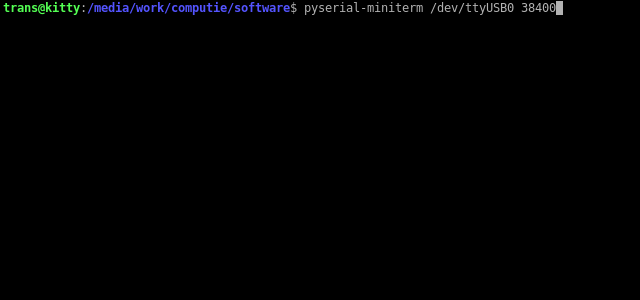

Gloworm OS
Started as part of Computie May 23, 2020
Split into its own repository August 07, 2023
Gloworm is a simple Unix-like OS written in C for retro hardware, specifically the Computie68k series of computers. It's largely based on reading Operating Systems Design and Implementation 2ed by Andrew S. Tanenbaum, although I've gone with a monolithic design, at least for the time being, for the simplicity of it. It can do pre-emptive multitasking using the 68681 timer. It also has an implementation of the minix version 1 filesystem, which uses RAM (through a device driver) to store the data, or a Compact Flash card connected as an IDE device. The second serial port can be configured as a SLIP device, with a basic implementation of UDP and TCP through a BSD sockets-style API, and an NTP command is provided for updating the system time on boot (when booting from disk).
The above video shows connecting over serial from a modern PC and resetting the hardware to run the monitor in ROM which displays the welcome message. The kernel is already loaded in RAM, so running the boot command will boot the kernel which then starts the shell. From the shell, some basic file operations and the ps command are shown.
Operating System Booting From Monitor/Compact Flash on 68k-SMT

The above video shows connecting over serial from a modern computer after first powering the board
on. The monitor runs first, giving the ">" prompt. The bootloader has been burnt into flash at
address 0x20000. From the monitor, the boot loader is run, which then loads the kernel from the
attached compact flash card. Each period (.) character printed represents 1 kilobyte of data loaded
from disk). The boot loader then jumps to the loaded kernel, which displays boot messages before
running the init process from disk. The init process first runs sh /etc/rc", which runs the
ntpdate command to update the system time. It then runs an interactive shell.
Some commands are shown after boot, and then the httpd program is run (which has forking disabled for the time being). From another computer, the curl command is run to issue a request to the board. The httpd program responds with the data "This is a secret message"
System Components
The source code contains a monitor program, a boot program, a kernel, and some basic unix-like utility commands, including a basic shell program. The monitor and boot programs are not required to run the kernel if there is another means of loading it into memory and jumping to the entry point.
The 68k monitor program is normally written to an onboard flash chip which the CPU will run first when powered on. It provides some basic commands over the serial port to inspect memory, send programs over serial into RAM, and jump to programs in memory. It's written specifically for the Computie68k and ComputieVME boards, which use an MC68681 serial port controller.
The boot program is also written specifically for the Computie68k, and contains only the necessary code to read the kernel.bin file from an ATA device, with an MSDOS-style partition table, and the minix v1 file system, and load it into memory before jumping to the entry point. In future, I will make it more configurable, and/or integrate the functionality into the monitor program. I use it when I want to boot the kernel on disk instead of transferring it over serial, but for most development, I transfer a newly built kernel over serial and use the existing commands on the flash card.
The kernel is a standalone kernel which can be configured for different 68k systems. It uses Kconfig from the Linux kernel to configure which drivers to include. I'm still in the process of integrating and testing options, so it might still require some manual code changes to get alternate configurations working (particularly editing the main.c to change the device initializations). I plan to support other computers in future.
Configuring & Building
To configure the system, you can either install the Debian kconfig-frontends package, or use the
provided Dockerfile to run them from a container, or hand-edit one of the existing configs. Default
config files for the 68k-SBC/SMT, k30-SBC, and k30p-VME are provided in config/. Copy one to the
root directory and rename it .config to make it active. The complete system can then be built
using make. An optional argument can be provided to make to store all build file outputs in a
separate location. By default, it will store object files in the src/ tree.
make dockerconfig
make O=build all
The kernel.bin file contains the complete kernel (and shell, if the option is selected). The
kernel.load file contains the bin file in a text format that can be sent over serial to the
monitor program running on a board. To send it, run:
python3 tools/load.py build/src/kernel/kernel.load
Building A FlashCard Root Image
A disk image can be built using a loopback device with the following make commands:
make create-image
make mount-image
make build-system
make umount-image
Which will produce a 20MB disk image in minix-build.img using the build/image/ directory as the
mountpoint, and the minixv1 filesystem. It does not include a partition table, so that needs to be
created on the flash drive by other means. It can be written to the partition-specific block device
file using dd on a unix-like desktop.
In order to boot off the CompactFlash directly, the boot.load script can be loaded over serial and
written to an alternate location such as 0x020000. It must be a location that is outside of the
Flash chip's sector in which monitor is written, or else the system will be unbootable. The
boot.bin image doesn't contain a vector table like the monitor.bin image does.
After sending the boot.load file over serial (without running it), in the monitor, run the
following to write it to flash location 20000:
eraserom 20000
writerom 20000
verifyrom 20000
You can then boot from the monitor at any time by running:
boot 20000
The bootloader will print a period character for every 1K of the kernel image loaded from the disk into RAM, and then it will run the kernel after. If it works, you should see the heartbeat LED flashing to indicate the kernel is running and multiprocessing is enabled and switching.
Configuring Networking
If the second serial port is connected to a desktop, it will act like a SLIP connection, which can
be bridged to the desktop's network, where /dev/ttyUSB1 is the serial device connected to the
second serial port of the board, and 192.168.1.x is the local network, and enp3s0 is the
internet-connected network interface on the linux desktop:
sudo slattach -s 38400 -p slip /dev/ttyUSB1
sudo ifconfig sl0 192.168.1.2 pointopoint 192.168.1.200 up
# (this is automatically added on my machine, but might be required) sudo route add -host 192.168.1.200 sl0
sudo arp -Ds 192.168.1.200 enp3s0 pub
sudo iptables -A FORWARD -i sl0 -j ACCEPT
sudo iptables -A FORWARD -o sl0 -j ACCEPT
sudo sh -c "echo 1 > /proc/sys/net/ipv4/ip_forward"
The device will have IP 192.168.1.200 which also needs to be configured in the kernel's
src/kernel/main.c function at the bottom.
Get the Source
https://github.com/transistorfet/gloworm/Or clone with:
git clone git@github.com:transistorfet/gloworm